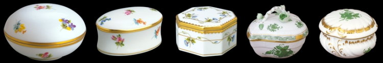

|
|
| |
Herend ist eine Ortschaft im
Bakony Gebirge und befindet sich auf der Landstrasse 8 zwischen
Veszprém im Osten und Ajka in westlicher Richtung. Herend
hat insgesamt rd. 3.500 Einwohner und wer das Wort Herend
hört, dem fällt nur die Porzellanmanufaktur ein.
Die Gegend war bereits in der Römerzeit besiedelt.
|
Im Gebiet der Gemeinde fand man die Überreste mehrerer
Dörfer aus der Folgezeit. Diese waren während einer
in dieser Gegend nur rd. 15 Jahre andauernden türkischen
Besatzungszeit weitgehend entvölkert. Einerseits entflohen,
andererseits waren die Türken von den in der Burg von Buda
beschäftigten Buchhaltern in der Logodi utca Strasse
dazu
angezettelt, ein Exemplar nach dem anderen
dafür zu statuieren, wie sehr sie Steuereinnahmen in einer
Höhe benötigten, die die Bevölkerung meistens
gar
nicht leisten konnte. Jungedliche wurden laufend nach Istambul
verschleppt, die Mädchen in die Harems der türkischen Obrigkeit,
die Jungs wurden dort zu türkischen Janitscharen umerzogen. Nach der Vertreibung der Türken war
diese Gegend weitgehend menschenleer und so begannen die Habsburger
Mitte des 18. Jahrhunderts mit der Ansiedlung von Fachkräften
aus verschiedenen Ländern zur Bearbeitung der Ländereien. Die meisten kamen aus dem
deutschsprachigen Raum. Die neuen Siedler sorgten für eine
Belebung der Landwirtschaft. Die schwer
lehmigen Böden waren vielen Töpfern zugute gekommen. Kaolin half
zur Enttehung der Porzellanmanufaktur. Nach dem zweiten
Weltkrieg fand eine selektive Vertreibung der Deutschen statt. Die
heutige Bevölkerung lebt entweder von der Porzellanmanufaktur
oder ist Pendler zwischen den Städten Veszprém und
Ajka.
|
|
|
Die
größte Porzellanmanufaktur der Welt - bestens
bekannt unter Fachleuten. Ihr "Herender Genre",
Ziergegenstände, Figuren,
handbemaltes Geschirr, zeigt einen etwas historisierenden, sehr
typischen Stil. Der Betrieb wurde 1839 gegründet. Der Bau von
damals ist jetzt ein Museum mit porzellanenen
Prachtstücken.
Gegenüber der Fabrik können Sie die qualitativ
hochwertigen Porzellanstücke kaufen:
handgemalt, schön und teuer, dafür aber
wertvoll - bei
richtiger Aufbewarung und Pflege eine gute Kapitalanlage. |

Die
heutige Porzellanmanufaktur entstand allmählich ab
1826 aus der Ziegelbrennerei des Topfwarenfabrikanten Stingl.
Das hat zu einem ersten großen wirtschaftlichen Aufschwung in
Herend geführt. 1839
begann der neue Eigentümer Moritz Fischer mit der Herstellung
von Porzellan. Zum enormen Aufschwung seiner Manufaktur trugen einige
glückliche Umstände bei. Einerseits fanden
die Kriege der Engländer im indochinesischen Raum
statt und fand daher ein Boykott von chinesischen Waren in
Europa statt. Da der Adel den Nachschub von wertvollem
Geschirr vermisste, stießen die Bestrebungen des neuen
Porzellanfabrikanten auf Gegenliebe und Unterstützung durch
den Hochadel auf dem gesamten europäschen Kontinent.
|
Zu den Abnehmern der Produkte aus Herend in der
Folgezeit zählten praktisch alle
Königshäuser, wie die
britische Königin Victoria, Kaiser Franz Josef I., der
russische Zar Nikolai II. und sogar der mexikanische Kaiser.
Da die Nachfrage enorm groß war, kam die Fabrik der
Bestellung kaum nach. Es konnten anfänglich nur der
kapitalkräftigste Hochadel und die Mitglieder
der
Geldaristokratie beliefert
werden
(Eszterházy, Rotschild u.a.). Die
Ausbildung der Fabrikmitarbeiter wurde intensiviert und die
Belieferten wurden zur vollsten Zufriedenheit bedient, der
Porzellanfabrikant und Hoflieferant wurde in den Adelstand erhoben. Da
die Namenszüge und Abbildungen der Belieferten das
Geschirr schmückten, das bei den Treffen mit ihren
ausländischen Gästen benutzt wurde, konnte man kine
bessere Werbung über die Landesgrenzen hinaus erfinden - und
die Legende vom besonderen Porzellan lebt auch heute noch.
|
Im
Jahre 1948
verstaatlicht und 1993 teilweise reprivatisiert, spielt die Handarbeit
weiterhin eine wesentliche Rolle bei der traditionellen
Porzellanherstellung in Herend. Künstlerisch hoches Niveau und
Spitzenqualität
sind Markenzeichen des Porzellans aus Herend.
Ihr
"Herender Genre" ist einzigartig auf dieser Welt.
|
|
|
|
Ungarn-Tourist Team

|
| |
| |
|